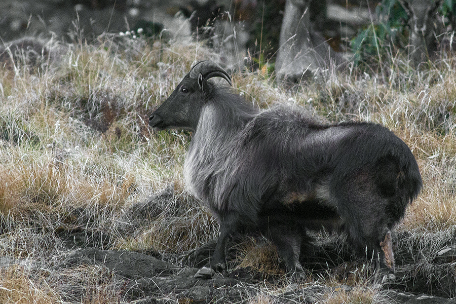
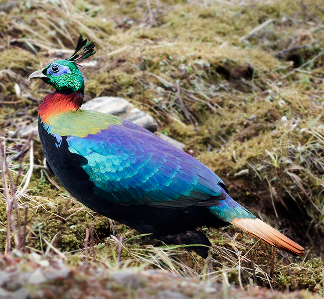
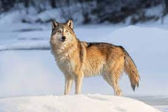
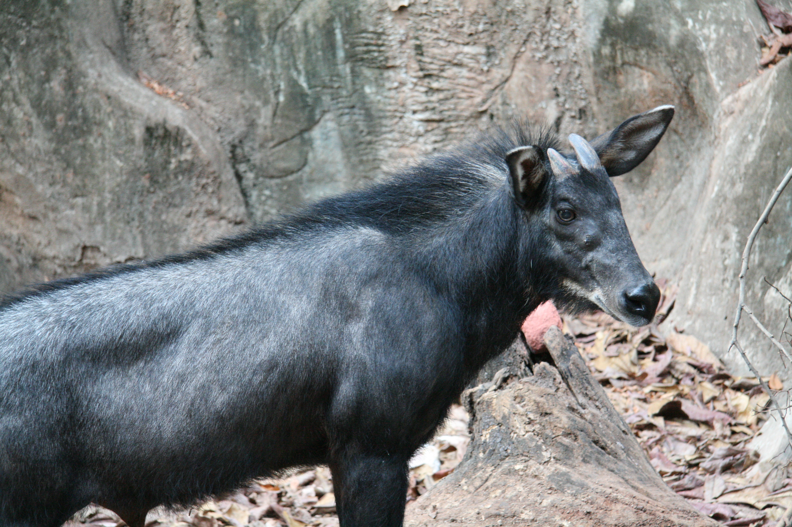
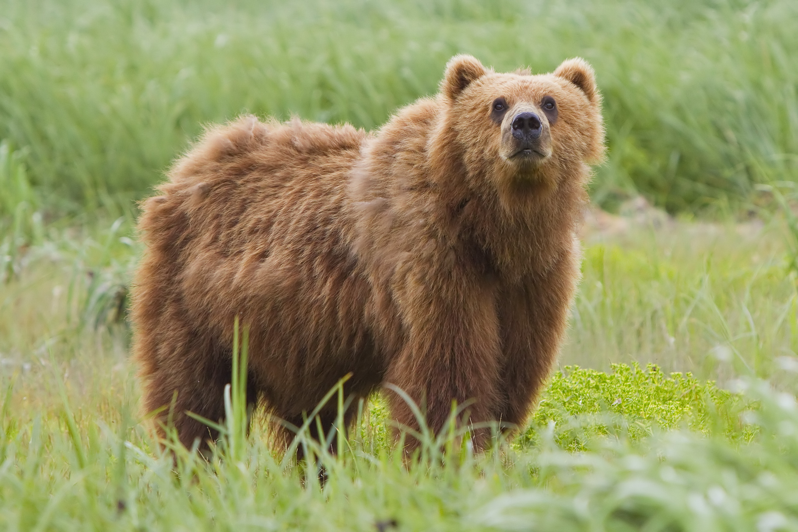
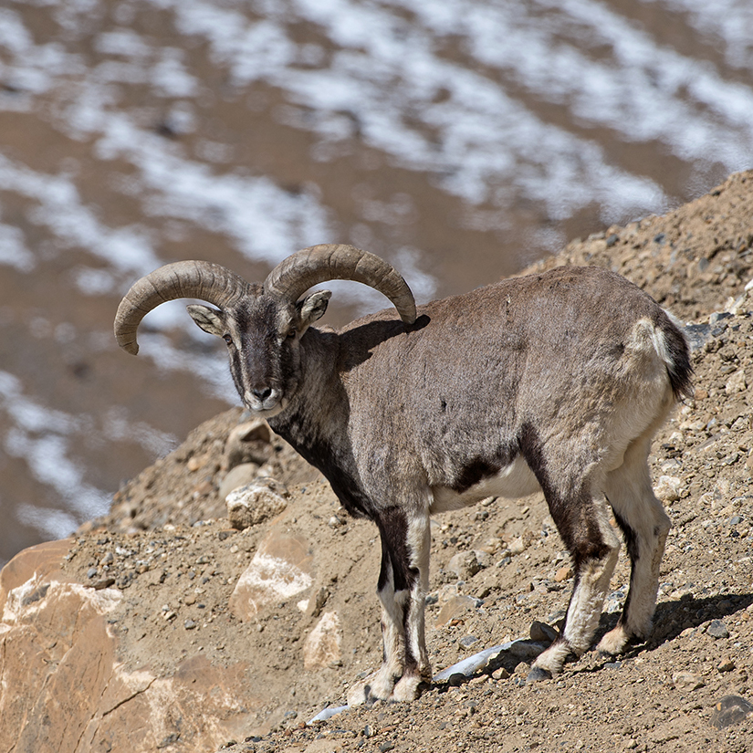
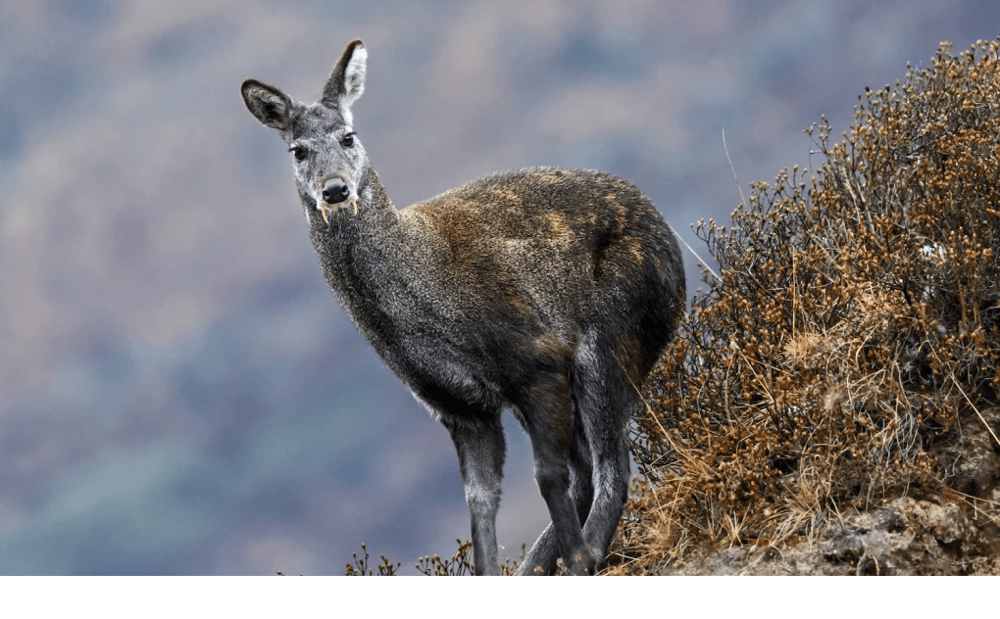
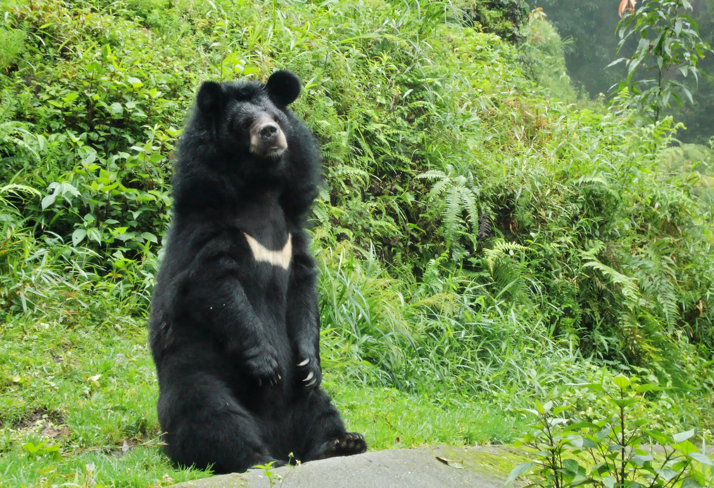

Snow Leopard
Found in high-altitude regions like Lahaul-Spiti and Kinnaur.Listed as Vulnerable; elusive and rarely seen.

Himalayan Tahr
The Himalayan tahr is a large even-toed ungulate native to the Himalayas in southern Tibet, northern India, western Bhutan and Nepal. It is listed as Near Threatened on the IUCN Red List, as the population is declining due to hunting and habitat loss

Western Tragopan
The western tragopan or western horned tragopan is a medium-sized brightly plumed pheasant found along the range of Himalayas to Uttarakhand within India to the east. The species is highly endangered and globally threatened.

Himalayan Monal
The Himalayan Monal, also called Impeyan monal and Impeyan pheasant, is a pheasant native to Himalayan forests and shrublands at elevations of 2,100–4,500 m (6,900–14,800 ft). It is as Least Concern on the IUCN Red List.

Tibetan Wolf
The Himalayan wolf lineage can be found living in Ladakh in the Himalayas, the Tibetan Plateau, and the mountains of Central Asia apredominantly above 4,000 m (13,000 ft) in elevation because it has adapted to a low-oxygen environment.

Serow
A goat-antelope species found in the mid-Himalayan forests.All four species of serow were, until recently, classified under Naemorhedus, which now only contains the gorals.This genus has been analyzed, studied and reclassified a number of times

Brown Bear
Inhabits higher alpine meadows and forests, especially in Lahaul-Spiti.

Blue Sheep
Its also called as Bharal. Common prey of the snow leopard, found in rocky mountain slopes

Musk Deer
The male deer possesses a musk gland specialized for the production of musk which is one of the most valuable scented animal products

Himalayan Bear
Lives in temperate forests, known for its distinct white chest mark.